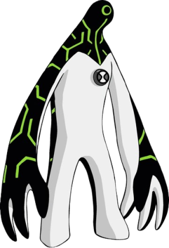

Seu corpo é feito de metal líquido biomecânico, coberto por circuitos eletrônicos verdes que brilham.
Seu principal poder é possuir, controlar e "dar um upgrade" em qualquer máquina ou objeto tecnológico ao se fundir a ele. Ultra-T também é capaz de modificar seu próprio copo e disparar lasers.
Espécie: Mecamorfo Galvânico
Origem: Lua Galvan B
Curiosidade:
Sua espécie é uma criação de Galvan, sendo experimentos acidentais vindos da junção de nanorrobôs no satélite natural, a lua de Galvan.
